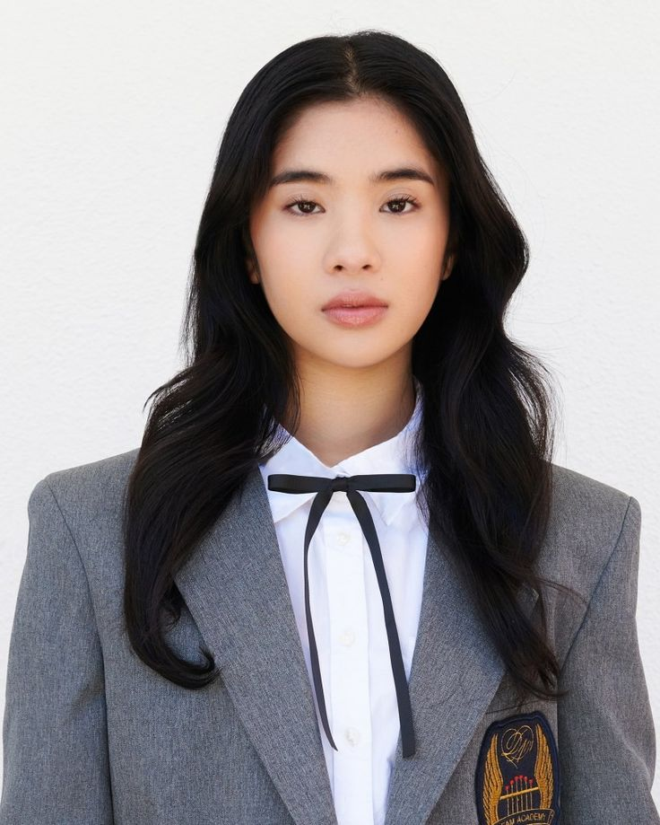

Sophia Laforteza nasceu o 31 de dezembro de 2002 nas Filipinas. É atriz, conhecida pelo seu trabalho em Katseye.
Sophia desde pequena começou e recebeu treinamento em dança (ballet, jazz, hip hop, tap) desde os 5.

Participou do reality show de sobrevivência e formação de grupos The Debut: Dream Academy (2023), com 120 000 candidatas, conquistando seu lugar e tornando‑se líder do KATSEYE.